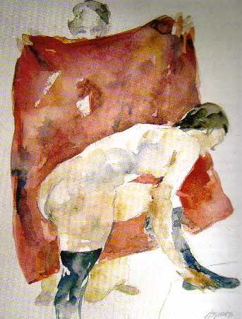
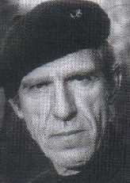
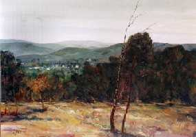

El resplandor de un dolor
Entrevista con el artista pintor Alvaro Izurieta.
¡Qué difícil hablar de alguien
famoso en determinado arte. Más si uno carece de conocimientos elementales
acerca de tal arte!
Así me dije, el día
en que fui a entrevistar a Álvaro Izurieta.
Quien lo conoce, seguramente
hará un gesto indicativo de admiración.
Para quien no lo conoce, le diré brevemente algunas palabras sobre él,
aunque bien pueden ver su biografía completa y obra, por la red, en su
propia
página Web (1):
Nació en Córdoba – Argentina- en 1944 y desde sus primeros
años mostró preocupación por el dibujo y la pintura. El
Dr. Carlos Stutz, lo impulsó a dedicarse
con exclusividad a este arte,
con quien expone por primera vez en 1968.
Su búsqueda por profundizar en esta elección de vida, lo lleva
a transitar por entornos diferentes, hasta que se establece finalmente con su
familia en la ciudad de
Unquillo, de su provincia natal, en el año 1981.
Allí, desde entonces, se lo puede ver entremezclado con su gente, buscando
personajes y paisajes para sus trabajos, jugando tenis…alternando su derrotero
con los avatares de la vida cotidiana.
 |
Ha realizado exposiciones
en diferentes ciudades del interior y del extranjero en prestigiosas
salas de arte, recibió premios, realizó labor docente…
Los retratos por petición de terceros han sido múltiples;
ha abordado tópicos tradicionales como las tareas campestres,
los que han alternado con desnudos, tema este último, que adquirió
en su obra un rol fundamental; utilizando acuarelas, pasteles, óleos
y dibujos. En 1997, la Presidencia de nuestra Nación adquirió
su “Virgen Niña” (óleo) que fue obsequiado
al Papa e integra la pinacoteca Vaticana. Su hijo Pablo, para referirse a su obra, expresa que “sintetiza la historia del arte toda,…considerada en su conjunto, (que) deberá recrear particularmente la historia de la pintura argentina junto al testimonio implícito y contradictorio de la tierra arrasada en medio de un paisaje de enorme riqueza y de la belleza y la gracia de su gente en un ámbito de irremediable pobreza.” (2) Así es. Izurieta es sensible al dolor humano y el abandono social y lo refleja en forma recurrente en el transcurso de su obra:. “…tanto en los paisajes, temática importante de los últimos años, como en las figuras, la búsqueda de la belleza opera siempre como una reivindicación ante el drama personal y social…” (2 op.citado) |
La melancolía
es un hilo conductor en la labor del artista, que actualmente ha operado
un cambio en su expresión en la cual no existe ánimo por
la más mínima ocultación y que él alude como
“ruptura de la conciencia” (2 op.citado): “La ruptura
no es con la pintura sino consigo mismo, una ruptura interna, de la propia
conciencia:- me permito no controlar, no sé que va a suceder-”. |
 |
Hasta aquí, la evolución del artista que habita al hombre… ¿Y qué del hombre mismo?
Cada uno de nosotros plasma un temperamento heredado,
en confluencia con una educación familiar, el medio ambiente social y
cultural y lo que se concibe
como búsqueda de trascendencia…Esto
último es lo que más empuja a las personas a concretar su proyecto
vital, lo que le da sentido…
Difícil concretar tal proyecto, cuando las
inclinaciones y potencialidades personales se contraponen, como en el caso de
Álvaro, a las aspiraciones
concebidas como
aceptadas en una familia de
clase media de su tiempo…esto es, con un padre de profesión ingeniero
que no vio que el arte, pudiera a través
de una actividad concreta hacer
factible una subsistencia digna y se opondría tenazmente a la voluntad
del muchacho… Por entonces contaba 21 años y
trabajaba en una Agencia
de Publicidad y Diseño. Mucho esfuerzo y tiempo mediaron para convencerlo
de esta vocación y de su éxito…:
“La relación
conflictiva
inicialmente con papá y ruptura consecuente, así como
su posterior aceptación, nos sirvió a los dos”, comenta
emocionado.
“Alguien dijo que mis pinturas reflejan un –yo puedo-
con relación a mi papá…”
 |
Tanto
su hermano gemelo (Gustavo) que falleció a los 18 años,
cómo él mostraron temprano una inclinación por
la creatividad, por lo que estuvieron unidos desde un principio en esta
búsqueda y haciendo causa común para defender un derecho
a su vocación.
La muerte de Gustavo, lo marcó decisivamente. Los gemelos compartían sensaciones similares, estaban unidos desde sus preferencias hasta la afirmación necesaria del propio ser en la sociedad y en su medio familiar…: “A los 13 años, fuimos a un escondite que sólo nosotros conocíamos y poniendo las manos sobre la Biblia, hicimos un juramento, en cuanto trataríamos que nuestro paso por este mundo, sería para que éste fuera un poco mejor…”“hasta ahora he tratado de cumplirlo”.
|
Es la muerte de este hermano, el constituyente de
la mitad de su existencia, enmarcada por la tragedia y la duda, que lo llevará
a una larga etapa de ensimismamiento…
a ese vacío interior que
plasma la melancolía de toda su obra. La dupla de personajes o elementos,
que trasunta un “éramos dos” y que ahora, se refleja solitario
en sus personajes marginales.
Su pintura conlleva una profunda poesía, muy inquietante, a la que trata
de serenar…un trasponer el dolor, mitigándolo con la idealización
de la sexualidad
femenina al desnudo. Proyectar en la compañera amada,
su necesidad de afecto, de ser, de sentir… Volver a nacer; afirmar que
está vivo a pesar de tanto andar, de transitar la soledad existencial
que le aqueja.
En este acto de reivindicación de la propia
historia, es que busca mejorar cada día como esposo y como padre y en
su relación con colegas y con famosos; de lo
contrario, expresa, “la
pintura es un artificio”.
Cada alumno y cada hijo le trasmiten valores y virtudes
diferentes. De los últimos señala:
“De mi hijo mayor, Pablo, resalto el equilibrio,
la constancia y la fe en sí mismo.
De Adela, la segunda, la lucidez e inteligencia para ubicarse y entender la
realidad, armonizar rápidamente el entorno, ser respetada y querida entre
sus
compañeros por su prudencia.
A Ramiro, el tercero, porque es la persona más talentosa que he conocido;
tiene fe en su talento; tiene esa inteligencia que permite resolver los problemas
con inusitada velocidad.
Y Andrés, el más chico, por su sentido de la libertad, por su
estabilidad en mantenerse feliz en todas las circunstancias…”
“La libertad es lo esencial para lograr el
respeto por uno mismo, la autoestima, que permite encarar los desafíos,
sin miedos a la gente que se tiene al lado.
Si bien es cierto que la libertad
es lo que a uno lo hace sentir más inseguro y el miedo es el mayor enemigo
que tenemos en nuestra vida”
“Lo único que nunca -negocié- con mis hijos fue el respeto,
la disciplina y el cumplimiento de las etapas con responsabilidad, de acuerdo
a las decisiones personales”
“La época actual es de total sometimiento para los chicos, el mundo
se presenta apabullante para sus posibilidades; la pobreza, la falta de estímulo,
hace que carezcan de fe en sí mismos”
Reflexionamos ahora acerca del “misterio creativo”,
ése que se plantea en términos psicoanalíticos, como la
carencia en la fuente de la creación, asimilando su origen
a la fantasía.
Según expresa Grinsberg (5):
… “el acto creativo sería el
eslabón final de una serie de etapas (proceso) caracterizadas por fluctuaciones,
generalmente inconscientes y transitorias, entre realidad y
fantasía,
estados de “desorganización” y reorganización, fantasías
de tipo alucinatorio y percepciones objetivas, abstracciones y concretizaciones,
etc.
En el acto creativo se logra una síntesis dialéctica de las
fases previamente descriptas, que dará lugar al producto creado”.
Entonces, es que desde nuestra perspectiva destacamos
finalmente, acerca de la obra de IZURIETA:
La misma constituye una suerte de puente que nos lleva a su creador e implica
la concreción sublime, reparadora y conciliadora de aquellas vivencias
tempranas
que marcaron su impronta en este talento superior.
(1) http://www.alvaroizurieta.com.ar
(2) “Alvaro Izurieta- Tintas y acuarelas, obras recientes”. Casa
museo Lino E. Spilimbergo. Exposición de sus pinturas 19 de marzo al
23 de abril de 2005.
Unquillo. Provincia de Córdoba. Argentina.
(3) Invitación a la muestra de Alvaro Izurieta en la Galería de
Arte”Cerrito” inaugurada el 8 de abril de 2005. Córdoba,
Capital, Argentina.
(4) Periódico “La Voz del Interior” de Córdoba Capital,
Argentina 19.03.05
(5) L. Grinberg, L.(1971): Observaciones psicoanalíticas
sobre la creatividad. Revista de Psicoanálisis, XVIII, nº 4:697-713